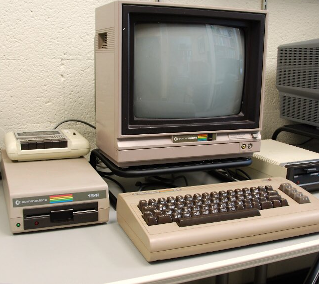
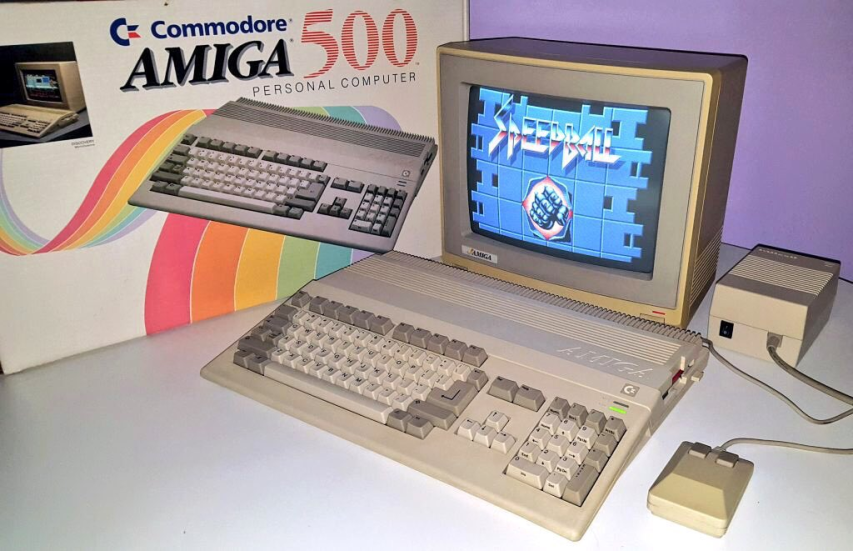

Computers
When I first got to know the Commodore C64 I knew I was going to do something with computers later...
The Commodore C64
When I first bought my C64 it was mainly for playing games. It was much cheaper than having to spend money in arcade halls to play my favourite games.
The Commodore Amiga
After the C64 came a whole range of Commodore Amiga's which I learned to program in basic, assembler and C. Starting with the A500 I eventually owned an Amiga 1200, an Amiga 600 and the top range model the Amiga 4000.
